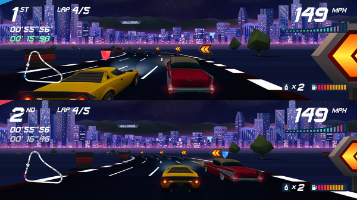
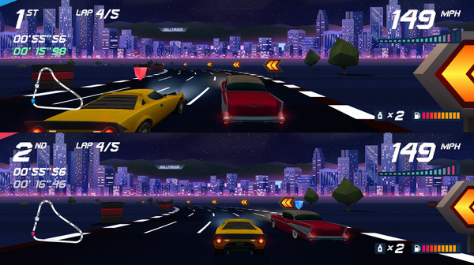

Sobre este jogo:
Horizon Chase Turbo é um jogo de corrida inspirado nos grandes sucessos dos anos 80 e 90: Out Run, Lotus Turbo Challenge, Top Gear (SNES), Rush, entre outros. Cada curva e cada volta no Horizon Chase Turbo recria a jogabilidade de arcade clássica e oferece velocidade e diversão ilimitadas. Pise fundo e divirta-se!
De volta ao sofá!
Horizon Chase Turbo oferece um modo Multiplayer Split Screen que resgata a nostalgia de jogar algo com seus melhores amigos sentados em um sofá durante a noite toda.
Gráficos reinventados!
O Horizon Chase Turbo traz de volta o contexto gráfico da geração de 16 bits
e cria um estilo que é inspirado no passado sem deixar de lado sua contemporaneidade.
O polígono aparente e a estética da cor secundária acentuam a beleza visual do jogo,
resultando em uma atmosfera única. Você vai sentir a alma retro do jogo em um corpo
completamente moderno.
Músicas compostas por Barry Leitch!
Horizon Chase Turbo apresenta Barry Leitch, o músico por trás das trilhas sonoras de jogos clássicos de corridas de fliperama Lotus Turbo Challenge, Top Gear (SNES) e Rush. Enquanto você joga o jogo, você será hipnotizado por suas músicas encantadoras que complementam o êxtase gráfico de cada horizonte.